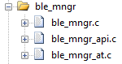

BluetoothLE
BLE Manager
BLE manager provide the auto-advertise option and handling the BLE status that make user eaiser to control BLE statment.
Initialize
Before using the BLE manager, please follow below steps to initiate.
Step 1. Enable BLE manager
#define BM_ENABLED (1)
The definition been defined in qd_module.h in sys_config folder.
Step 2. Add related file in Keil project

Step 3. Register callback and init
Add below program in app_main.c
void APP_BleUnsolicitedCallback(uint16_t u16EvtType, T_OplErr tEvtRst, uint8_t *pu8Data, uint32_t u32DataLen)
{
switch(u16EvtType)
{
case USLCTED_CB_EVT_BLE_INIT:
{
// ble inited event
// initialize ble advertise data
APP_BleAdvDataInit();
// initialize ble scan response data
APP_BleScanRspDataInit();
break;
}
case USLCTED_CB_EVT_BLE_ENT_ADVERTISE:
{
// enter advertising event
break;
}
case USLCTED_CB_EVT_BLE_EXI_ADVERTISE:
{
// exit advertising event
break;
}
case USLCTED_CB_EVT_BLE_CONNECTED:
{
// ble connected event
break;
}
case USLCTED_CB_EVT_BLE_DISCONNECT:
{
// ble disconnect event
break;
}
default:
{
// should not be here
break;
}
}
}
void APP_BleInit(void)
{
// assign unsolicited callback function
Opl_Ble_Uslctd_CB_Reg(&APP_BleUnsolicitedCallback);
// register service
GAP_Svc_Init();
GATT_Svc_Init();
// ...register your service here
// initialize the ble manager (auto-adv)
Opl_Ble_Init_Req(true);
// user implement
}
The character of Opl_Ble_Init_Req() is to enable/disable auto-advertise function.
- If set as true - the auto-advertise will be enabled, and will directly start advertise after ble manager init done. While disconnect from connected state, ble manager will also start advertising, till user calling
Opl_Ble_Stop_Req(). - If set as false - the auto-advertise will be disabled, and will not advertise after ble manager init done.
Info
The APP_BleInit() function create by default in app_main.c,
it's for developer to fill the ble related init function in it.
Step 4. Setup advertise data
void APP_BleAdvDataInit(void)
{
// ble advertise data inititate
// user modify
// *
uint8_t au8BleAdvertData[];
// configure your own advertise data
Opl_Ble_Advertise_Data_Set(au8BleAdvertData, lens);
// *
}
Step 5. Setup scan response data
Create scan response data init function, and modify your wishes data.
void APP_BleScanRspDataInit(void)
{
// ble scan response data inititate
// user modify
// *
uint8_t au8BleScanRspData[BLE_ADV_SCAN_BUF_SIZE];
// configure your own scan response data
if(OPL_OK != Opl_Ble_ScanRsp_Data_Set(au8BleScanRspData, lens))
{
OPL_LOG_ERRO(APP, "Scan Rsp Data Set Fail");
}
// *
}
Step 6. Call set adv data & scan rsp data after init
Call APP_BleAdvDataInit (created in step 4) and APP_BleScanRspDataInit (created in step 5) after recevied USLCTED_CB_EVT_BLE_INIT event in ble unsolicited callback.
void APP_BleUnsolicitedCallback(uint16_t u16EvtType, T_OplErr tEvtRst, uint8_t *pu8Data, uint32_t u32DataLen)
{
switch(u16EvtType)
{
case USLCTED_CB_EVT_BLE_INIT:
{
// ble inited event
// initialize ble advertise data
APP_BleAdvDataInit(); // <---
// initialize ble scan response data
APP_BleScanRspDataInit(); // <---
break;
}
Unsolicited callback
The unsolicited callback will content with ble status and carried the result in each state.
Info
Unsolicited callback prototype located in ble_mngr_api.h
Register service
Descript how to create the service file
How To...
- How to 1...
- How to 2...